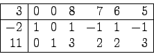
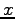

The following digraph represents a partially solved minimum cost flow problem with labels on nodes indicating net demand and those on arcs showing unit cost, capacity, and current flow.
The given solution is a basic feasible solution for basis .
- (7 points) Compute all simplex directions available at this basis.
- (7 points) Determine whether each of the simplex directions is improving.
- (6 points) Regardless of whether they are improving, determine the maximum feasible step that could be applied to each of the simplex directions, and state the resulting values of the variables and which variables would then be basic.
has optimal tableau
- (10 points) If the right hand side of the second constraint was increased by one unit, how would the optimal value change? For what range (up and down) of values of this right hand side coefficient would the change per unit be the same?
- (10 points) Find the values of the cost coefficients and .
Find the dual of the linear program
Perform one dual simplex iteration on the tableau

Let  be the following directed graph, where the label on each edge
gives the cost of traversing that edge, the capacity of the edge, and the flow on the edge.
This solution is a basic feasible solution.
be the following directed graph, where the label on each edge
gives the cost of traversing that edge, the capacity of the edge, and the flow on the edge.
This solution is a basic feasible solution.
- (10 points) What must satisfy for the indicated solution to be optimal?
- (10 points) Assume the given basic feasible solution is optimal. Suppose the supply at node 1 and the demand at node 5 are each increased by 5 units. Use sensitivity analysis to calculate the increase in the optimal value.
There are four sources and four destinations. The supplies and demands are indicated. The cost of each arc is given in the table, and a feasible solution  is indicated by the superscripts.
- (10 points) The feasible solution only uses five arcs. Extend to give a basic feasible solution.
- (10 points) Calculate the reduced costs for your basic feasible solution. Can you conclude that your solution is optimal?